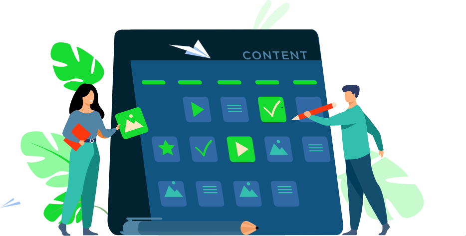
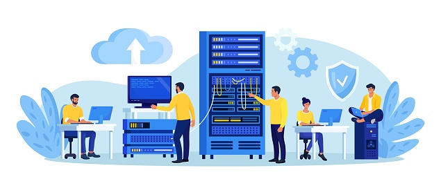

📘 Panduan Admin Galeri Multimedia
Halaman ini merupakan pusat kontrol utama dari website Galeri Multimedia. Sebagai admin, kamu bertanggung jawab dalam mengelola semua konten — mulai dari gambar, video, hingga audio — agar tetap relevan, menarik, dan berkualitas tinggi.
🧩 Panduan Pengelolaan Konten
Konten multimedia seperti gambar, video, dan audio disimpan dalam struktur data yang bisa diatur dengan mudah. Admin dapat memperbarui informasi konten, menambah deskripsi, dan menyesuaikan kategori agar mudah ditemukan oleh pengguna.
- File utama:
data/media.json - Gunakan atribut
approveduntuk menyetujui atau menolak media. - Setiap media sebaiknya dilengkapi dengan
judul,kategori, dandeskripsi. - Tambahkan tanggal unggahan untuk mendokumentasikan perkembangan karya.
⚙️ Membangun Sistem Admin Dinamis

Untuk mengubah halaman admin ini menjadi sistem dinamis, kamu bisa menggunakan kombinasi PHP + MySQL agar data tersimpan secara permanen.
Dengan login berbasis session, hanya admin terdaftar yang dapat mengakses dashboard pengelolaan.
🔒 Keamanan Sistem
Keamanan data adalah prioritas utama dalam setiap sistem admin. Admin perlu memastikan hanya pengguna sah yang dapat mengakses data sensitif. Beberapa langkah penting yang dapat diterapkan antara lain:
- Gunakan
password_hash()di PHP untuk menyimpan password dengan aman. - Batasi login hanya untuk IP atau perangkat tertentu.
- Tambahkan sistem CSRF Token untuk mencegah manipulasi form.
- Gunakan HTTPS agar data terenkripsi saat dikirim melalui jaringan.
👩💻 Peran dan Tanggung Jawab Admin

Sebagai pengelola utama, admin berperan menjaga mutu dan konsistensi isi website. Selain memastikan media yang diunggah sesuai dengan standar, admin juga harus memperhatikan tampilan dan aksesibilitas.
- Menyeleksi setiap konten sebelum ditampilkan.
- Menghapus media yang melanggar kebijakan atau hak cipta.
- Memberikan deskripsi tambahan agar konten lebih informatif.
- Mengatur kategori untuk pengalaman pengguna yang lebih baik.
💡 Teknologi yang Disarankan
Untuk membuat sistem admin yang efisien dan profesional, kamu bisa memanfaatkan kombinasi beberapa teknologi berikut:
- Frontend: HTML5, CSS3, JavaScript, dan framework modern seperti Tailwind atau Bootstrap.
- Backend: PHP, Python (Flask/Django), atau Node.js.
- Database: MySQL, PostgreSQL, atau SQLite.
- Media Storage: Lokal, Cloud, atau API penyimpanan seperti Google Drive.
🚀 Visi Pengembangan Selanjutnya
Tujuan jangka panjang dari proyek ini adalah menciptakan sebuah sistem galeri multimedia interaktif di mana pengguna dapat berkontribusi, berkomentar, dan saling berkolaborasi. Dengan antarmuka admin yang kuat, sistem ini dapat menjadi pusat pembelajaran dan pameran karya digital Indonesia.
Versi mendatang dapat mencakup fitur AI tagging otomatis, analisis statistik pengunjung, dan integrasi ke media sosial. Semua ini akan membuat situs lebih dinamis dan relevan di era digital.